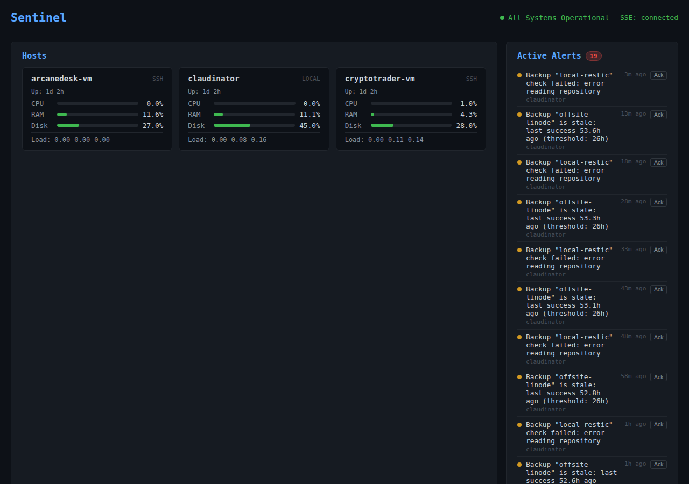
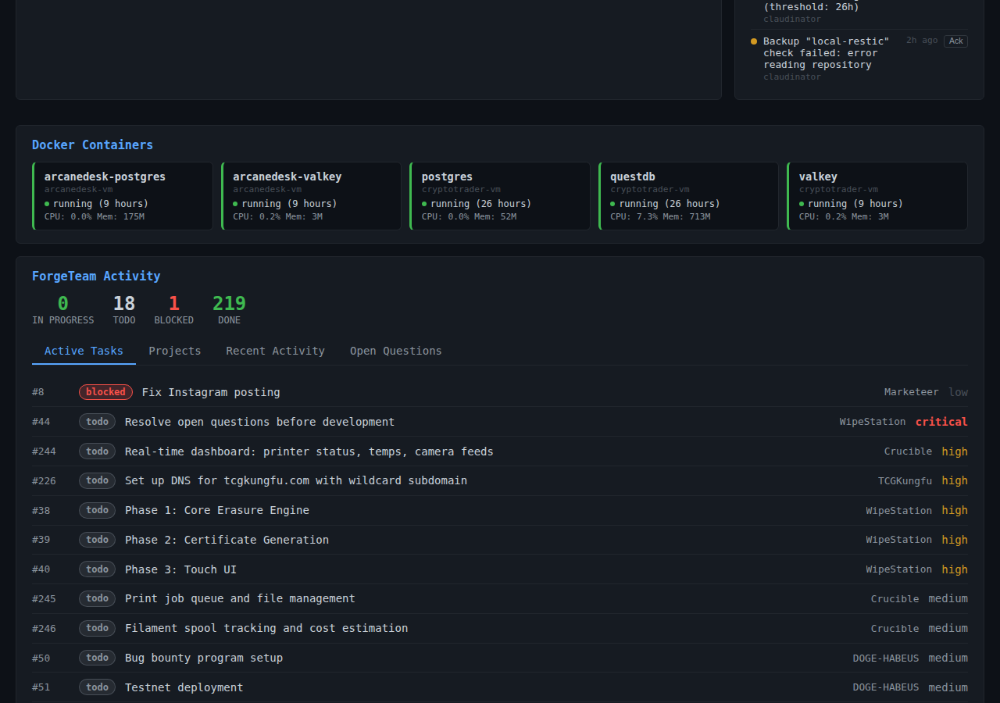
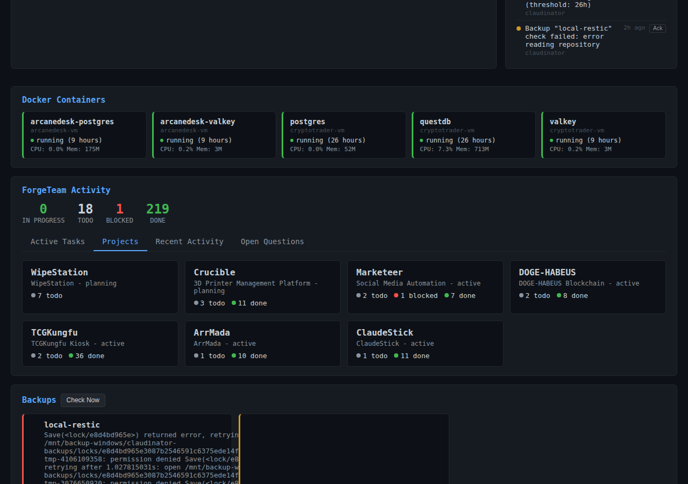
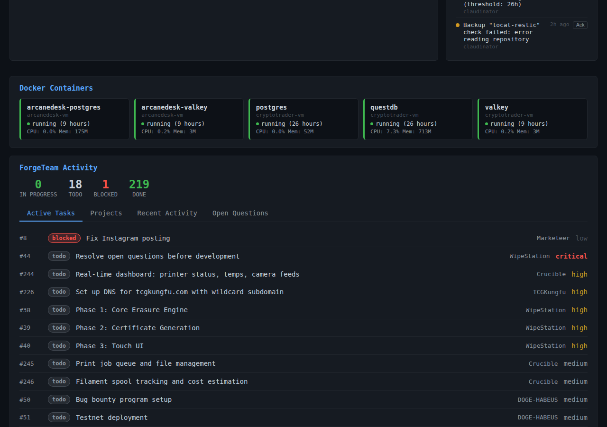
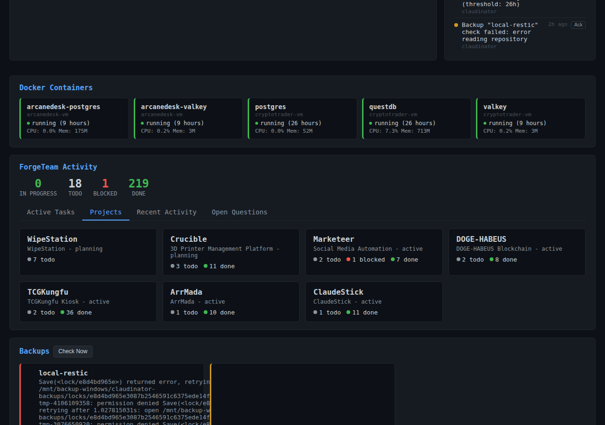
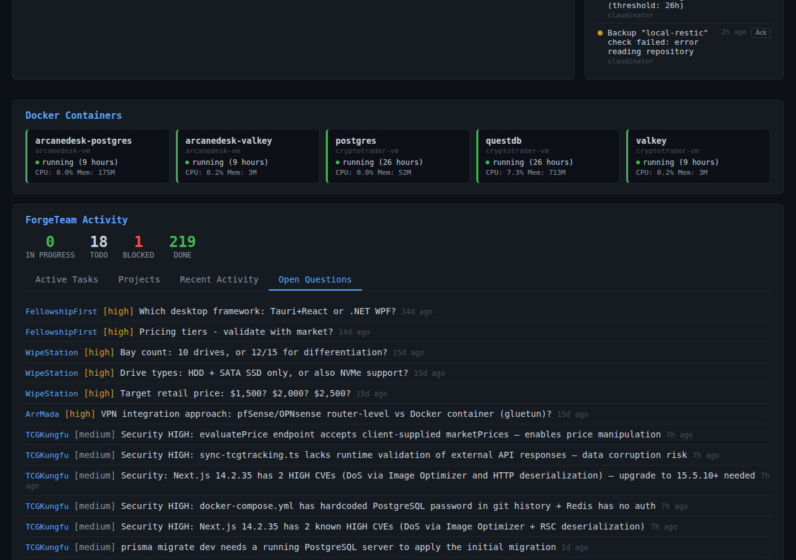
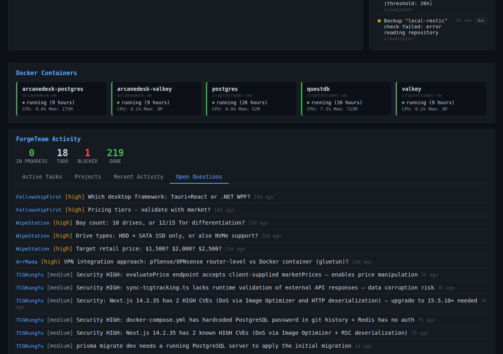

Sentinel
Table of Contents
- What is this? - Screenshots - Quick Start - How to Use - Viewing Your Infrastructure - Monitoring Active Work - Tracking Projects - Reviewing History - Managing Alerts - Restarting Containers - Features - Installation - Prerequisites - Detailed Setup - Running in Production - Configuration - Host Configuration - Environment Variables - Alert Thresholds - Tech Stack - LicenseReal-time infrastructure monitoring for your entire server fleet — see everything that's happening across all your VMs, Docker containers, and background tasks in one place.
What is this?
Sentinel is a monitoring dashboard that watches over your infrastructure 24/7. Instead of SSHing into each server to check if things are running, you get a single web interface showing the health of all your hosts, containers, services, and automated tasks. It's designed for small teams running multiple VMs who need instant visibility without the complexity of enterprise monitoring tools.
Screenshots
 The main dashboard gives you an at-a-glance view of all your infrastructure — host status, CPU/memory usage, and running containers

See what's currently running across your infrastructure — deployments, backups, and automated maintenance tasks

Track progress across all your projects with completion rates and task counts
The main dashboard gives you an at-a-glance view of all your infrastructure — host status, CPU/memory usage, and running containers

See what's currently running across your infrastructure — deployments, backups, and automated maintenance tasks

Track progress across all your projects with completion rates and task counts
 A live feed of everything happening in your infrastructure — deployments, restarts, backups, and alerts

Track unresolved issues and questions that need attention across your projects
A live feed of everything happening in your infrastructure — deployments, restarts, backups, and alerts

Track unresolved issues and questions that need attention across your projects
Quick Start
1. Clone the repository
git clone <repository-url>
cd sentinel
2. Install dependencies
npm install
3. Set up your configuration
cp config.example.json config.json
# Edit config.json with your host details
4. Start the server
npm start
5. Open your browser
http://localhost:3000
That's it! The dashboard will start collecting metrics from your configured hosts immediately.
How to Use
Viewing Your Infrastructure
When you open Sentinel, the main dashboard shows you everything at once:
- Host Status panel lists all your VMs with their uptime and current state
- System Metrics displays live CPU, memory, and disk usage graphs
- Container Overview shows which Docker containers are running on each host
Click any host to drill down into detailed metrics and container logs.
Monitoring Active Work
Switch to the Active Tasks tab to see what's currently happening:
- Running deployments and their progress
- Scheduled backup jobs
- Automated maintenance tasks
- Container restarts and health checks
Each task shows a real-time status indicator and elapsed time.
Tracking Projects
The Projects tab gives you a birds-eye view of all ongoing work:
- See how many tasks are running vs. completed for each project
- Click a project to filter the activity feed
- Check completion percentages to spot bottlenecks
Reviewing History
The Recent Activity feed is your infrastructure's event log:
- Every deployment, restart, backup, and alert is timestamied
- Filter by host, project, or event type
- Click any event to see full details and logs
Managing Alerts
Sentinel automatically creates alerts when something needs your attention:
- Container crashes or failed health checks
- Disk space running low
- Services that have been down too long
- Failed backup jobs
Acknowledge alerts from the dashboard to track what you've addressed.
Restarting Containers
Need to restart a container? Click the container name in the dashboard, then hit the Restart button. You can also enable Auto-Restart to automatically recover from crashes.
Features
- Real-time monitoring — see updates as they happen, no page refresh needed
- Multi-host management — track dozens of VMs from a single dashboard
- Container visibility — know which Docker containers are running where
- Task orchestration — watch automated deployments and maintenance tasks
- Smart alerting — get notified when something actually needs your attention
- Activity timeline — complete audit log of infrastructure changes
- SSH-based collection — no agents to install on your servers
- Backup tracking — verify your backup jobs are running on schedule
- One-click restarts — quickly recover containers without SSHing
Installation
Prerequisites
- Node.js 18 or higher
- SSH access to the hosts you want to monitor
- SSH keys configured for passwordless login
Detailed Setup
1. Clone and install
git clone <repository-url>
cd sentinel
npm install
2. Create your config file
cp config.example.json config.json
3. Add your hosts to config.json
{
"hosts": [
{
"id": "web-01",
"name": "Web Server 01",
"hostname": "192.168.1.10",
"port": 22,
"username": "admin"
}
]
}
4. Set up SSH keys
Sentinel needs passwordless SSH access to collect metrics: ssh-keygen -t ed25519 -f ~/.ssh/sentinel
ssh-copy-id -i ~/.ssh/sentinel.pub admin@192.168.1.10
5. Configure SSH key path
If using a non-default key location, set the environment variable: export SSH_KEY_PATH=~/.ssh/sentinel
6. Start the server
npm start
npm run dev
7. Verify it's working
Open http://localhost:3000/health — you should see{"status":"ok"}
Running in Production
For production deployments, use a process manager like PM2:
npm install -g pm2
pm2 start src/server.js --name sentinel
pm2 save
pm2 startup
Configuration
Host Configuration
Each host in config.json supports these options:
{
"id": "unique-identifier",
"name": "Human-friendly name",
"hostname": "IP or domain",
"port": 22,
"username": "ssh-user",
"tags": ["production", "web"],
"checkInterval": 30
}
checkInterval: How often to collect metrics (seconds, default: 30)tags: For filtering and grouping hosts in the dashboard
Environment Variables
PORT— Server port (default: 3000)SSH_KEY_PATH— Path to SSH private key (default: ~/.ssh/id_rsa)DB_PATH— SQLite database location (default: ./data/sentinel.db)LOG_LEVEL— Logging verbosity: error, warn, info, debug
Alert Thresholds
Edit alert rules in config.json:
{
"alerts": {
"cpu_threshold": 90,
"memory_threshold": 85,
"disk_threshold": 90,
"container_down_minutes": 5
}
}
Tech Stack
- Backend: Express.js + Node.js
- Database: SQLite (better-sqlite3)
- SSH: ssh2 for remote metric collection
- Scheduling: node-cron for periodic checks
- Frontend: Vanilla JavaScript (no framework dependencies)
License
Copyright © 2026, TheForge, LLC. All rights reserved.